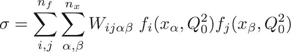

The APFELgrid plugin is a tool designed to accelerate the computation of physical observables at hadron colliders, by means of combining the interpolated weight-grids provided by the APPLgrid project with the evolution of parton densities provided by APFEL. The tool is aimed at PDF fitting groups, as it allows for the extremely rapid recalculation of cross-sections when varying the input PDF.
APFELgrid generates FastKernel (or FK) tables which reduce the computation of NLO pQCD predictions to a particuarly compact form in terms of PDFs at a single initial scale.

These tables are used for fits in the NNPDF series of PDF determinations.
This package consists of two major parts
The APFELgrid code is installed directly as a plugin to APFEL. Its use is demonstrated in the example example_gen.cc.
The FastKernel driver is supplied as a single C++ header which may be dropped into users projects where convenient. Included in the driver are routines for the basic and SIMD accelerated convolution with externally provided PDFs. An example of how to use the included driver is given in example_conv.cc. The FK table format itselfis a simple plaintext format designed such that writing custom interfaces to it should be simple.
Your APPLgrid installation must be modified such that all headers are installed (simply copy all headers from /src/ to /appl_grid/ before installation of APPLgrid)
A bootstrap script is provided which downloads and installs the relevant APPLgrid headers, detects the path of APFEL and configures and compiles the package for installation there.
To use this script and install to the default directory type
./setup.sh make install
Alternatively, the APPLgrid headers may be installed manually as specified above, and the installation performed in the typical autotools fashion
(autoreconf -i) ./configure make make install
A few tests can be performed upon the package with
make check
which is automatically executed by the boostrap script.
For usage examples, see
Documentation is generated with docco. ./docco_generate.sh
For comments or questions please get in contact via github.